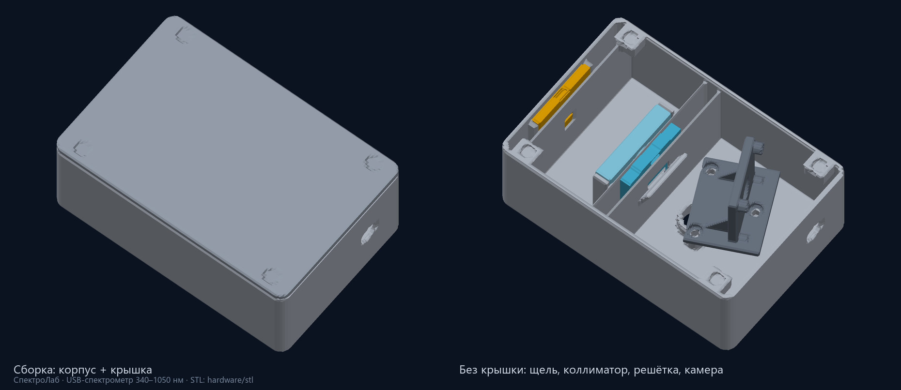
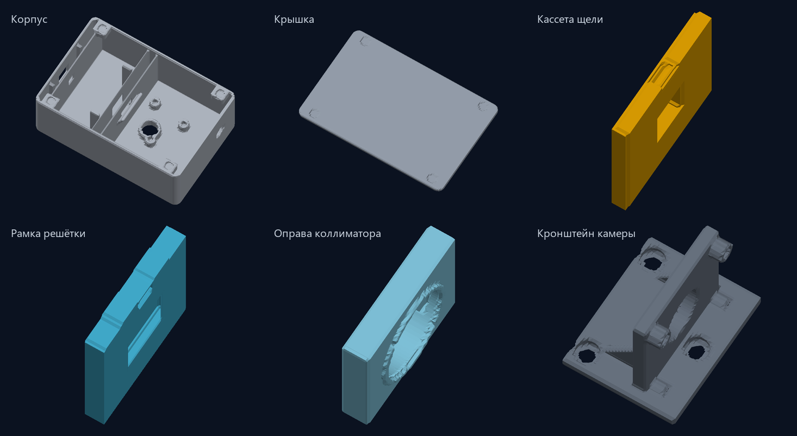

Прибор, ПО и 3D-модель: настоящий спектр, температура по закону Планка и протокол лабораторной за 15 минут. Здесь — презентация и печатная модель, код и документация — в репозитории.

Питч-дек на 10 слайдов: проблема, решение, что уже готово, рынок, бизнес-модель, конкуренты и план на 90 дней. PDF открывается прямо здесь, PPTX и таблица заявки — для редактирования.
Печатная модель собрана скриптом на NumPy (SDF + marching tetrahedra), без OpenSCAD и внешних 3D-библиотек. Шесть деталей, все замкнуты, объёмы проверены.
Корпус с крышкой и вид без крышки: кассета щели, оправа коллиматора, рамка решётки и кронштейн камеры.

Корпус, крышка, кассета щели, рамка решётки, оправа коллиматора и кронштейн камеры. PETG, слой 0,2 мм, 3 стенки.
| Параметр | Значение |
|---|---|
| Диапазон | 340–1050 нм в ПО; базовая версия 380–1050 нм, UV — от 340 нм |
| Оптическая схема | щель 0,03 мм → коллиматор f=40 мм → решётка 600 штр/мм → M12 f=6 мм |
| Дисперсия и разрешение | 0,68 нм/пиксель, FWHM ≈1,8 нм на 546 нм |
| Сенсор | 1920×1080, 1/2.9″, 2,8 мкм, без ИК-фильтра |
| Габариты и масса | 120×80×46 мм, ≈230 г, PETG |
| Цены | 9 900 ₽ (Home), 149 000 ₽ (Class, 15 приборов), 12 900 ₽ (UV) |
Всё открыто: код, конструкция, презентация и модель.
Ядро на NumPy, CLI, GUI на PySide6, 60 тестов, конструкция и документация.